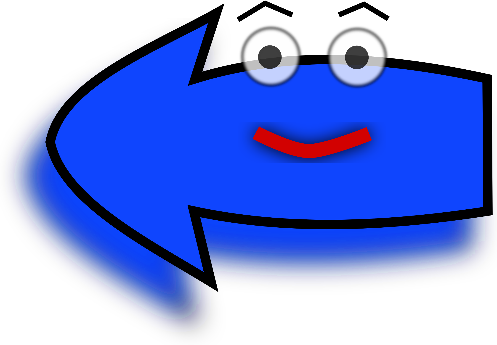

<nav>
  <div class="backwards-wrapper" *ngIf="settings.age">
    <a class="link" (click)="backNav()">
      
    </a>
  </div>
  <div class="nav-wrapper">
    <a class="age link" [routerLink]="['./age']">{{settings.age}} </a>
    <a class="theme link" [routerLink]="['./theme']">{{settings.themeDescription}} </a>
    <a class="reset link" *ngIf="settings.isGameBoard" (click)="onReset()"> Розпочати заново</a>
  </div>
  <div class="cancel-wrapper" *ngIf="settings.age">
    <a class="link" [routerLink]="['/']">
      
    </a>
  </div>
</nav>
